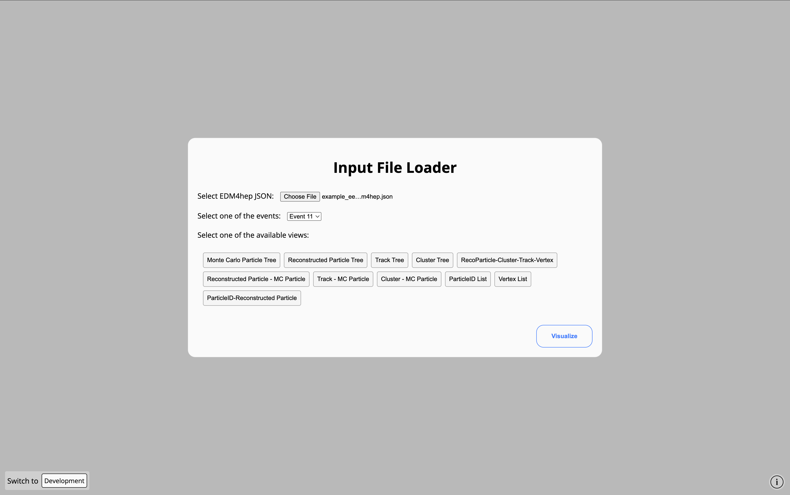
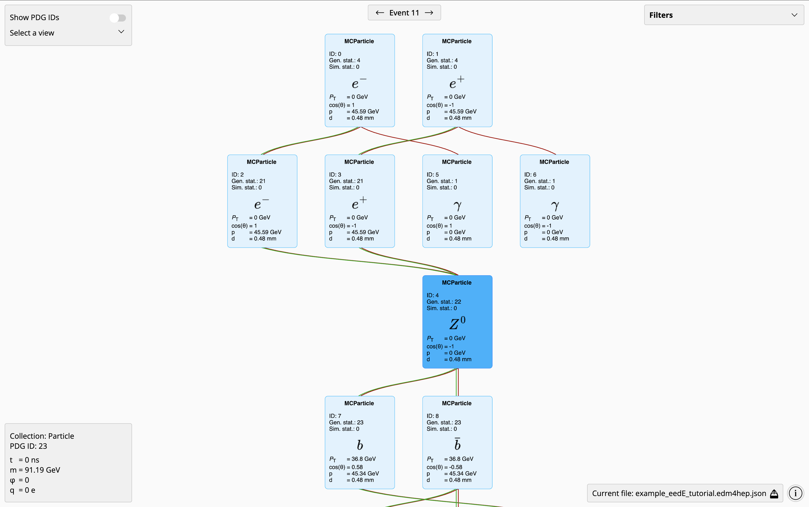
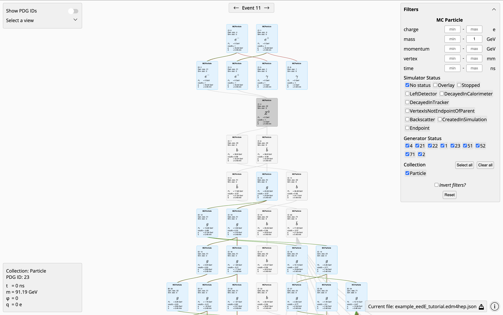

2.3. EDM4hep Event Data Explorer: eedE
Page contributors
Xunwu Zuo
Pablo Apausa
The following section explains the usage of eedE (EDM4hep event data explorer), a web-based tool for visualizing the structure of EDM4hep events.
Built in vanilla JavaScript with Pixi.js. It takes JSON files as inputs and renders the association between various objects such as Monte Carlo Particles.
2.3.1. 1. Generating JSON data from a ROOT EDM4hep file
2.3.1.1. 1.1. Source a FCC software stack release
source /cvmfs/sw.hsf.org/key4hep/setup.sh
2.3.1.2. 1.2. Convert ROOT event file to JSON
The edm4hep2json command converts the ROOT edm4hep file to JSON.
edm4hep2json [olenfvh] FILEPATH.edm4hep.root
Flag |
Description |
|---|---|
-o/–out-file |
output file path (default: “?edm4hep.root” –> “?edm4hep.json”) |
-l/–coll-list |
comma separated list of collections to be converted |
-e/–events |
comma separated list of events to be processed |
-n/–nevents |
maximal number of events to be processed |
-f/–frame-name |
input frame name (default: “events”) |
-v/–verbose |
be more verbose |
-h/–help |
show this help message |
It is recommended to limit the number of events to be processed: JSON is less efficient storage format than ROOT, and a few MBs Root file will get converted into hundreds of MBs
For example, you can call the script with
edm4hep2json -l ReconstructedParticles,Particle,MCRecoAssociations -e 2,3,5,7,11 filename.edm4hep.root
This saves ReconstructedParticles, Particle and MCRecoAssociations object collections, keeping the 2nd, 3rd, 5th, 7th and 11th events in the file (specified by the flag -e 2,3,5,7,11).
An example output can be found at example.edm4hep.json.
2.3.2. 2. Using eedE
Once the EDM4hep data has been converted into JSON, you can then head to eedE. After the Welcome modal, you are required to upload the EDM4hep JSON file with the Browse button and select the type of association to visualize.

2.3.2.1. Visualizing the Monte Carlo Particle Tree
The MC Particle Tree shown in the image below illustrates a collision at the center-of-mass energy 91 GeV, where both the electron and positron emit a ISR photon before they merge into an on-shell Z boson, which then decays into a pair of b quarks.

For each MC particle, \(P_\mathrm{T}\), \(\cos\theta\) and \(p\) represent the transverse momentum, the cosine of the polar angle, and the momentum magnitude in the lab frame. While \(d\) gives the displacement from the origin of lab frame (0,0,0) to the position where the particle is produced.
You can move around the viewport by clicking and dragging on the background, zoom in and out by pinching with two fingers in a trackpad or moving the scroll wheel in a mouse; and move around the objects by clicking and dragging on them.
You can also get more information about an object in the lower left corner: \(m\), \(φ\) and \(q\) are the particle mass, the azimuthal angle of its momentum, and the electric charge. And \(t\) gives the time at which it was produced.
While in the upper right corner you can filter objects by charge, mass, momentum, vertex, simulator status, generator status, and collection. With the possibility of inverting or resetting the selection. The image below filters out MC Particles with mass below 1 Gev (greyed out).
